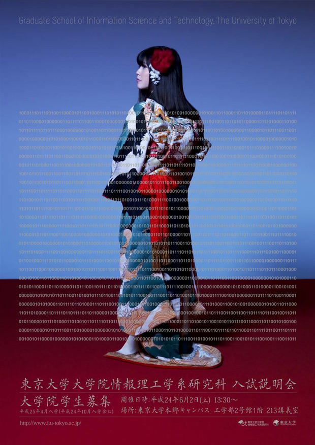
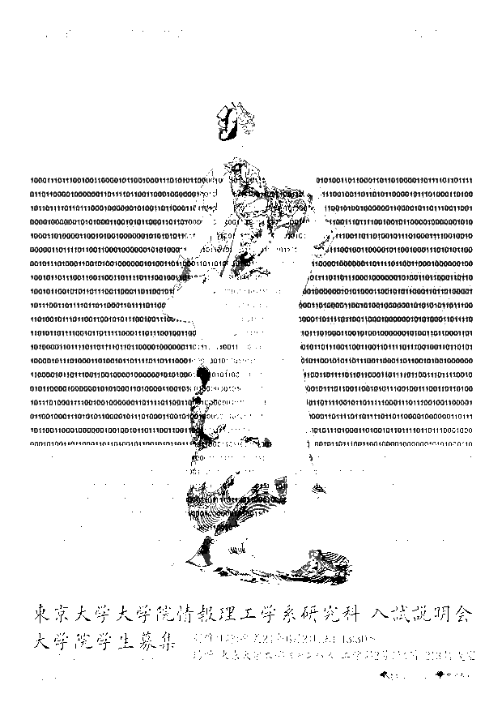
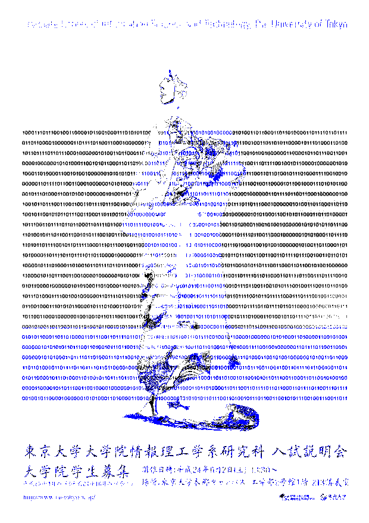
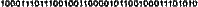

情报理工海报的图像处理
Posted on November 6, 2012
on python
最近这个东京大学情报理工的海报很火啊，试着做了做，无奈光 OCR 这个步骤就搞不定了。记下来权当消遣吧。
首先我们来选一张新的海报，这张貌似是今年的：

怎么 OCR 呢？直接拿“某某OCR”上貌似不太靠谱啊，那就先做一下预处理吧。首先试了下 Paint.NET 来做黑白、反色、调对比度，效果不好。
注意到 0 和 1 都是灰色的，那就从颜色着手。灰说明 RGB 三个值相似，那就测试一下 3 个值和平均值的差（的绝对值的和），如果小于一定范围，而且这个平均值也在一定范围中，那么差不多就是灰色了。把其他颜色置白，灰色加黑就好。调参数的过程比较枯燥，但是相比试过的其他方法效果好多了。效果图：

然后注意到红底部分咋全军覆没了呢？看了看取色的值，发现灰色和红色叠加后，RGB 值改变较大，于是又单独做了一下这个区域的范围，得到了更好的效果：

这部分的代码：
from PIL import Image
im = Image.open('poster.jpg')
pix = im.load()
for y in xrange(im.size[1]):
for x in xrange(im.size[0]):
a, b, c = pix[x, y]
m = (a + b + c) / 3
if 140 < m < 170:
avg = sum(map(abs, (a - m, b - m, c - m)))
if avg < 50:
pix[x, y] = (0, 0, 0)
elif avg < 70:
pix[x, y] = (50, 50, 50)
elif avg < 90:
pix[x, y] = (150, 150, 150)
else:
pix[x, y] = (255, 255, 255)
else:
if 80 < a < 150 and 70 < b < 140 and 70 < c < 140:
pix[x, y] = (0, 0, 255)
else:
pix[x, y] = (255, 255, 255)
im.show()
im.save('p.png', 'png')这总可以拿去 OCR 了吧，无奈试了几个 OCR 的，都没效果。看来处理得还是太挫啊。本想就此打住写作业去，结果手痒又想起拿滑窗自己做下 OCR。机器学习什么的还是不去折腾了，就进行屌丝级像素比对吧。注意到一件比较蛋疼的事，那就是 0 和 1 特么的不对齐！连续的 1 有时候会吃掉一个宽像素，连续的 0 有时候又会撑出来一个。于是在滑窗的过程中做了一个抖动的判断，效果很好。下面是第一行的一部分和其结果（都正确呵呵）：

1000111011100100110000101100100011101010
这部分的代码：
# coding: utf-8
from PIL import Image
im = Image.open('test.png')
im = im.convert('L') # 转灰度
pix = im.load()
size = list(im.size)
# 获得7*5的区域的灰度矩阵
def get(pix, sx, sy):
d = [[0 for i in xrange(7)] for j in xrange(5)]
for y in xrange(7):
for x in xrange(5):
d[x][y] = pix[sx + x, sy + y]
return d
# 前两个作为0,1标准
d1 = get(pix, 0, 0)
d0 = get(pix, 5, 0)
# 灰度矩阵和标准间比对打分
def score(da, db):
sc = 0
for y in xrange(7):
for x in xrange(5):
sc += abs(da[x][y] - db[x][y])
return sc
# 根据打分猜0或1
def guess(pix, sx, sy):
d = get(pix, sx, sy)
s = (score(d, d0), score(d, d1))
if s[0] < s[1]:
return 0, min(s[0], s[1])
else:
return 1, min(s[0], s[1])
x = 0
while x < size[0] - 4:
g, s = guess(pix, x, 0)
if x > 0: # 测试左抖动 1px
gl, sl = guess(pix, x - 1, 0)
if sl < s - 1000:
#print 'l',s,sl
g, s, x = gl, sl, x - 1
if x < size[0] - 5: # 测试右抖动 1px
gr, sr = guess(pix, x + 1, 0)
if sr < s - 1000:
#print 'r',s,sr
g, s, x = gr, sr, x + 1
#print 'x:',x, s, g
print g,
x += 5